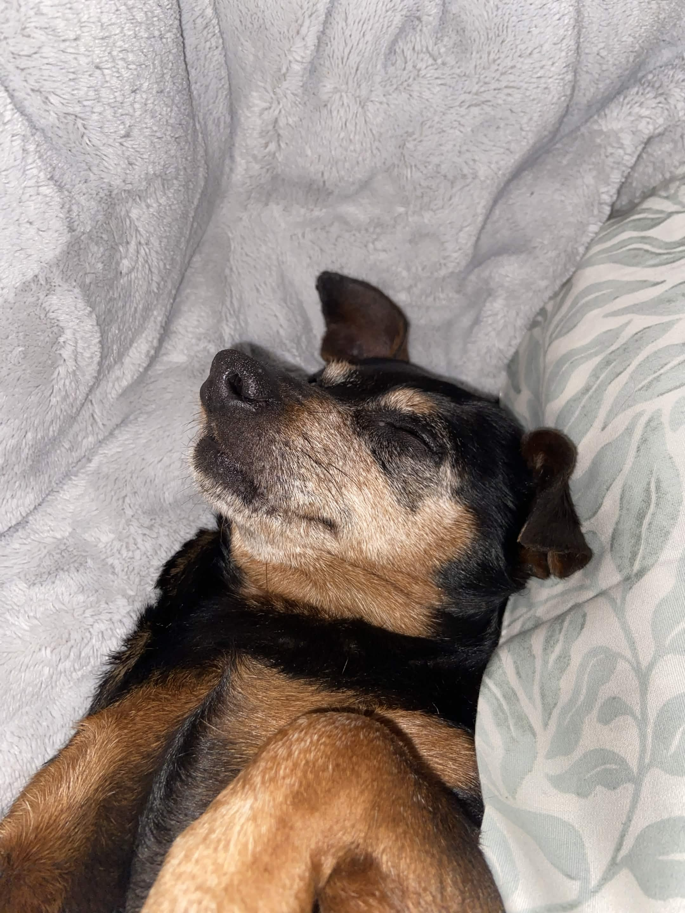
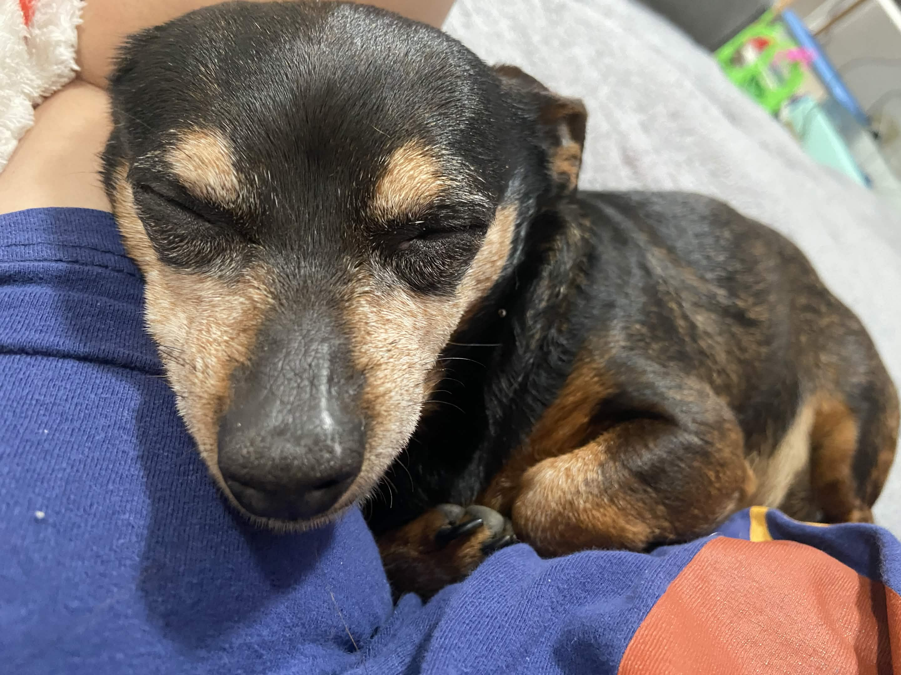

88x31 feelings
button trades
one of the coolest things about building a personal website is meeting other people who are doing the same. a developer i met on threads added my 88x31 button to his site, so of course i'm adding his to mine!! it feels like a little piece of the old internet, and i luvv that.
checkout my hommie, pyramid skeme. he makes sick music and has a dope website with even sicker visuals.
if you're wondering why i'm making such a big deal out of this, it's because it feels like the old web. people linked to each other's sites because they genuinely liked what someone had built. no algorithms. no trying to optimize everything. just websites connecting to other websites.
a productive day
today also ended up being surprisingly productive.
i've been stuck in a bit of a lazy slump lately, and i came across a cleaning video that somehow gave me the push i needed to get up. i cleaned the house, caught up on a few things i'd been putting off, and finally felt like i had some momentum again.
motivation REALLY is weird...
i feel like i've been running on muscle memory for a while now. i still get things done, but the excitement and drive that used to be there just... isn't. i've been wondering where it went.
the video talked about cleaning as an extension of self-respect, and for some reason that finally clicked.
i've always known that my environment affects me. i've struggled with my relationship with cleaning for a long time, to the point that i was diagnosed with ocd. clutter doesn't just annoy me. it genuinely distresses me. sometimes i look around the house and feel completely overwhelmed before i've even started.
having two young kids means the mess never really ends. i can spend an hour cleaning, turn around, and it's already undone. on top of that, i'm constantly trying to keep the intrusive thoughts that tell me everything needs to be sanitized under control.
it's exhausting.
but hearing someone frame cleaning as an act of self-respect instead of another chore changed something for me. it made me want to take care of my space because i'm taking care of myself, not because i'm trying to reach some impossible standard.
i don't know if it'll last, but it was enough to get me moving today and honestly, that's enough.
the video that motivated me: watch on youtube
dog update


marley decided that father's day would be a great time to scare me half to death.
while we were grilling burgers, grease and oil dripped onto the gravel. apparently that made the rocks smell absolutely irresistible, because she started eating them. i genuinely had no idea why she would suddenly decide gravel was on the menu until i put the pieces together later.
i was terrified she had an intestinal blockage. somehow, though, she kept pooping and peeing normally while also throwing up and passing rocks. it was the weirdest thing i've ever seen. every time i thought, "okay, this has to be the end of it," she'd throw up another rock.
being a college student, i hated feeling like i couldn't just take her straight to the vet. when i was working as a caregiver, i kept her on pet insurance specifically for situations like this. going back to school has meant making a lot of financial sacrifices, and this was one of those moments where i really felt it.
thankfully, she seems to have turned a corner. she's finally getting up, walking around the house, asking for food, and acting more like herself.
i'm still not letting her roam our property by herself. i have two kids to keep alive, and i can't spend my day wondering if my dog found something else to eat.
i've had marley for 12 years. she's been with me through so many different chapters of my life that it's hard to remember what life looked like before her.
i want her to grow old. i want to spoil her rotten and complain about her barking at a whistle in a song for years to come. i don't want to lose her because of some random, stupid accident.